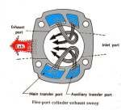

A two-stroke runs along at a steady throttle for a long time, with no hard riding. Then it locks and the rear wheel skids. The piston has seized in the cylinder. The usual explanation is heat that builds in one place when the engine never changes speed.
Is it safe to ride?
No. Pull the clutch in at once, stop safely and do not restart. A seized engine needs inspection first.
Quick checks first
- Was the engine run for a long time at one speed or one throttle opening?
- Is there two-stroke oil in the tank or in the fuel mix? Is the oil pump working?
- Is the spark plug the right heat range and colour? A white plug means lean or hot.
- Is the air filter clean, and are there air leaks at the carburettor or crankcase?
Why it happens
Many motorcycle two-strokes use loop scavenging. Fresh mixture flows in through the transfer ports and pushes burnt gas out of the exhaust port. When the throttle opens and closes, fresh mixture mixes with hot exhaust gas and cools the piston crown over the exhaust port. Run steady and that area keeps getting hotter. Eventually the piston melts or the oil film fails. A dirt bike is built for on and off throttle. Steady cruising for many kilometres is a different load.
Diagnose it step by step
1Does the engine turn over by hand with the plug out?
- No: the piston is stuck. Go to Engine has seized or locked up and the stuck-engine checks.
- Yes: go to step 2.
2Look through the plug hole and at the exhaust port. Is the piston scored or the crown damaged?
- Yes: workshop top-end repair: Assess the top end. See also Piston crown is chewed, pitted or melted.
- No: go to step 3.
3Is oil supplied?
- Check the tank, the pump and the cable: Check the two-stroke oil pump.
4Does compression test low?
- Yes: ring or cylinder wear: Test engine compression.
Prevention
- On the road, work the throttle on and off now and then. Do not hold one throttle opening for long distances.
- Use the right oil and ratio from the manual.
- Fit the right plug and jets. Never run lean.
Causes, most likely first
| Cause | How to confirm | Fix |
|---|---|---|
| Long steady throttle, heat builds over the exhaust port | Piston scored or melted over exhaust port | Rebuild top end, change riding style |
| Little or no two-stroke oil | Empty tank, pump not moving | Fill, set up pump |
| Lean mixture or air leak | White plug, high revs | Fix leak, clean jets |
| Wrong plug | Plug too hot | Fit the plug in the manual |